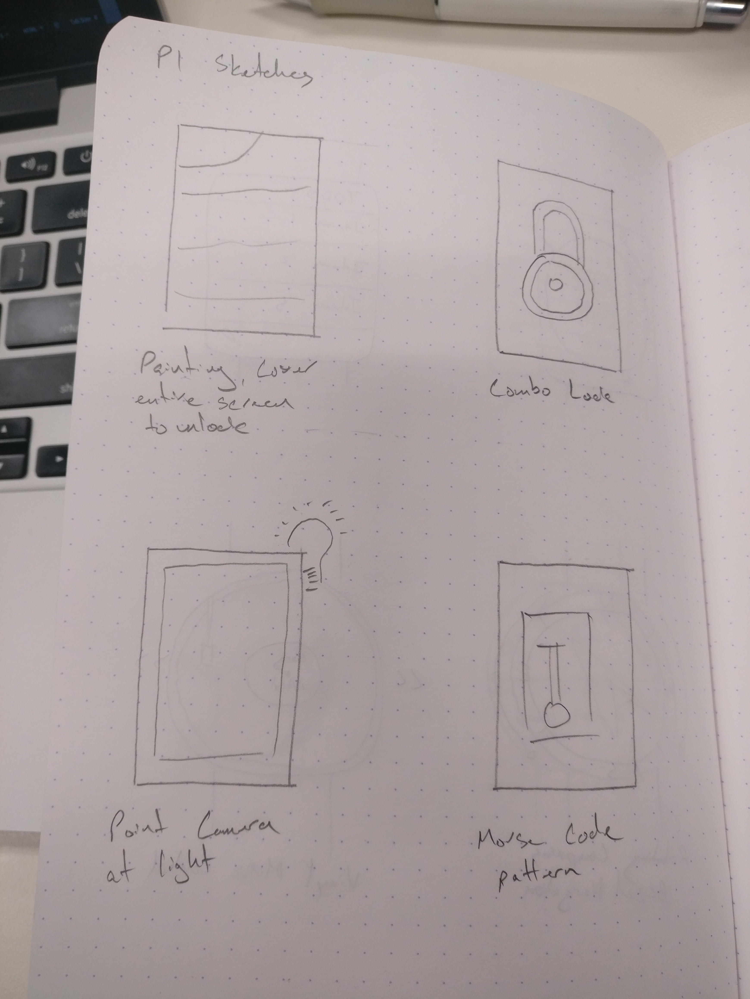
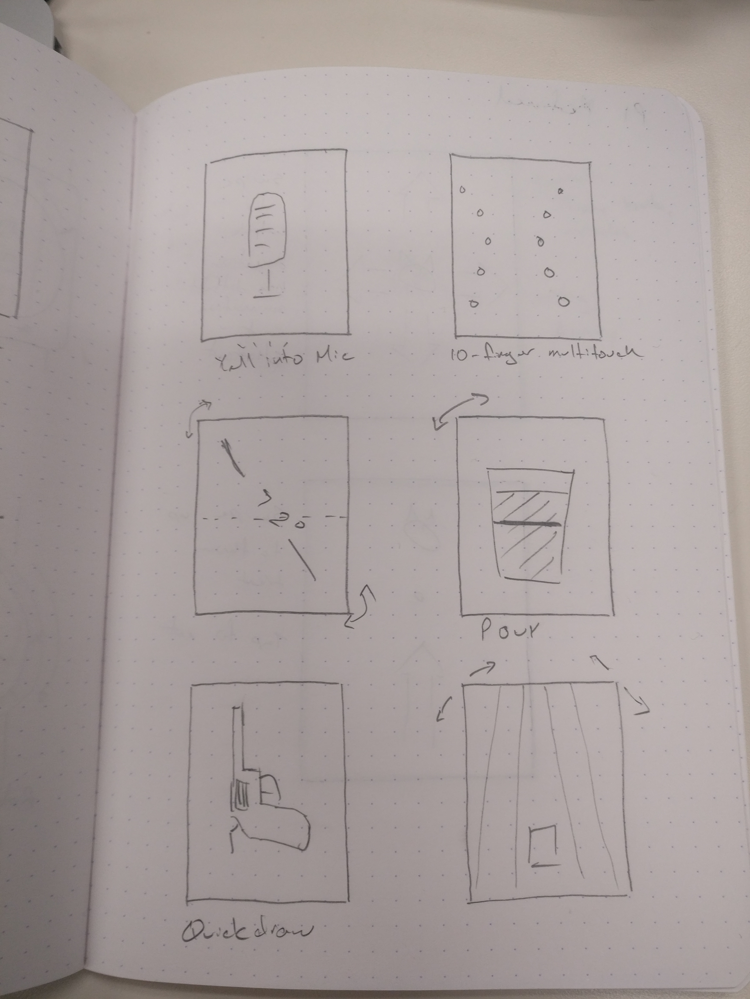
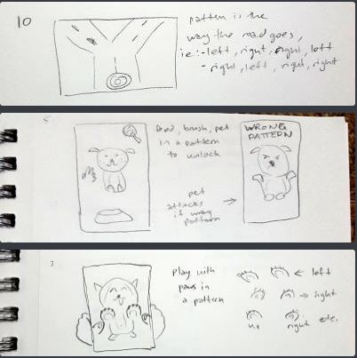
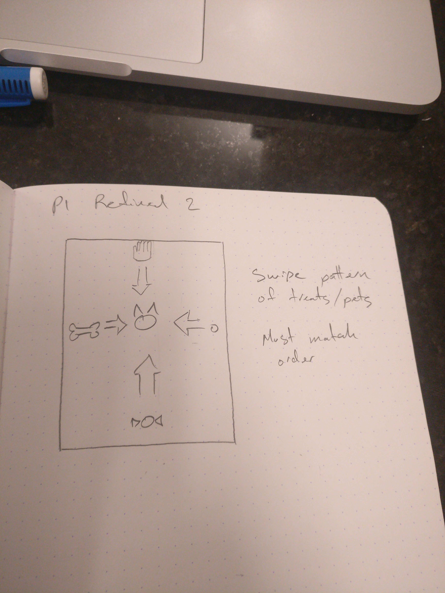
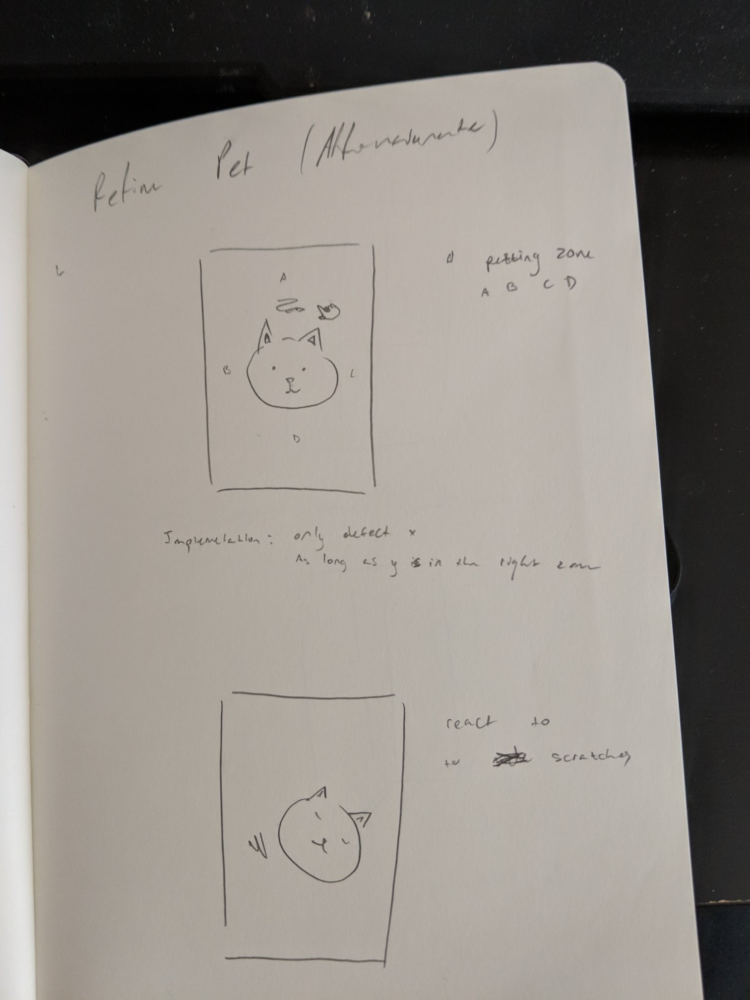
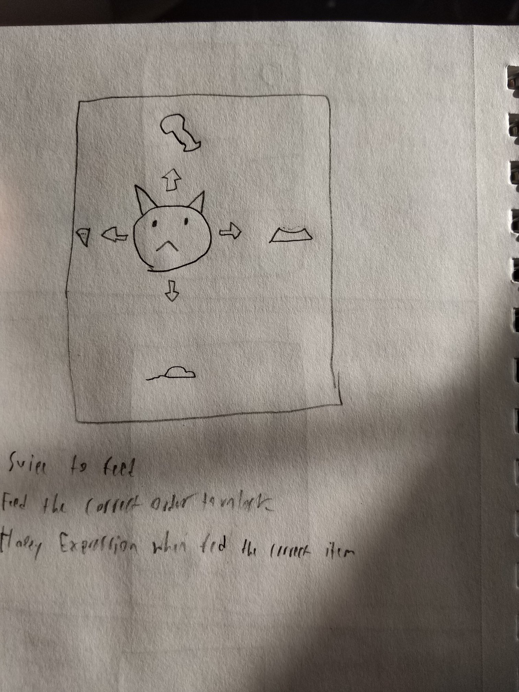
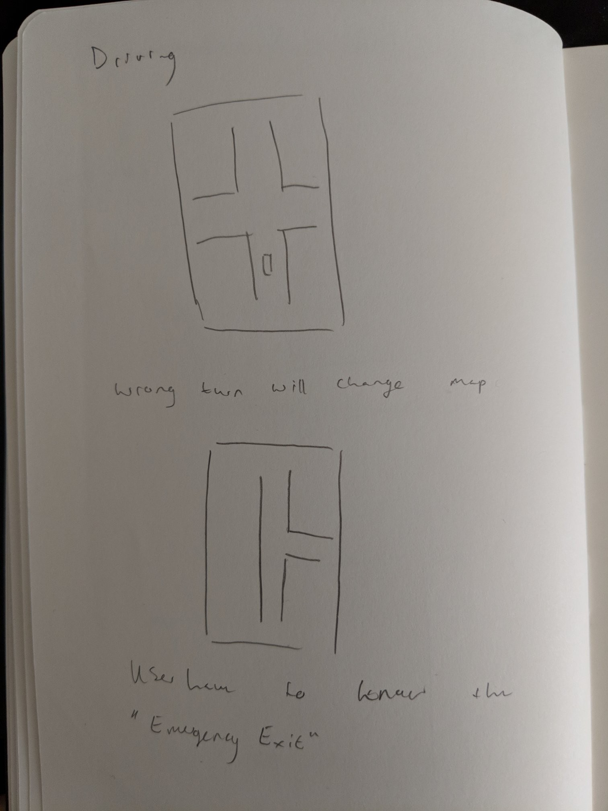
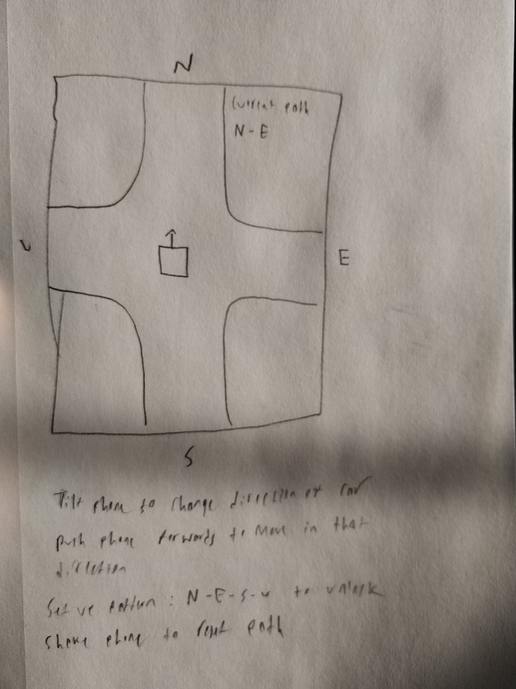
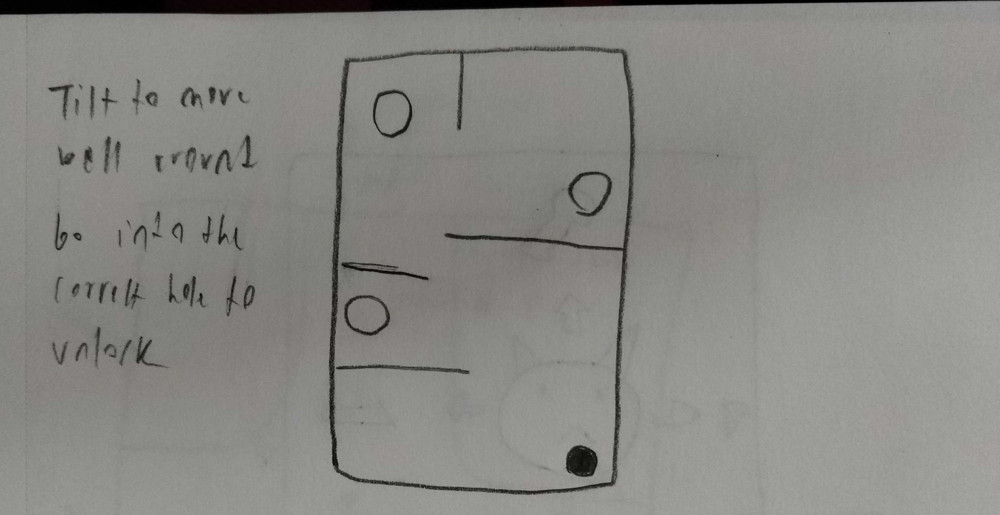
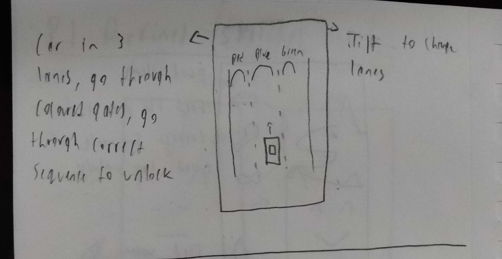

For P1, we were to create two interfaces as smartphone "slide-to-unlock" alternatives; one touch-based, one sensor based. Intial Sketches
 Following our intial sketches, we settled on three of our favourites; a touch-based pet, a gesture driving and gesture tilting ball puzzle. We iterated on these ideas and created refined sketches:
   During the presentation in class, we received a lot of feedback on the gesture driving idea. As we fleshed out the concept, we settled on a design that involved a birds-eye view of a car driving through the intersection, and took tilt inputs to choose which road to go down:
 We then realized that the idea was better suited to the tilting ball puzzle, since it was more intuitive to tilt the phone to move a ball as opposed to tilting the phone to drive a car.
 For the touch-based portion, we created a dog petting lockscreen. Once the user pets the dog's head, left and right cheeks, and chin, the screen is unlocked. The gesture-based lockscreen was of a tilting ball puzzle, where the user predefines specific holes to unlock. The user is then required to roll the ball into those holes to unlock.
Software Application (Dog Petting)
Software Application (Tilting Puzzle)